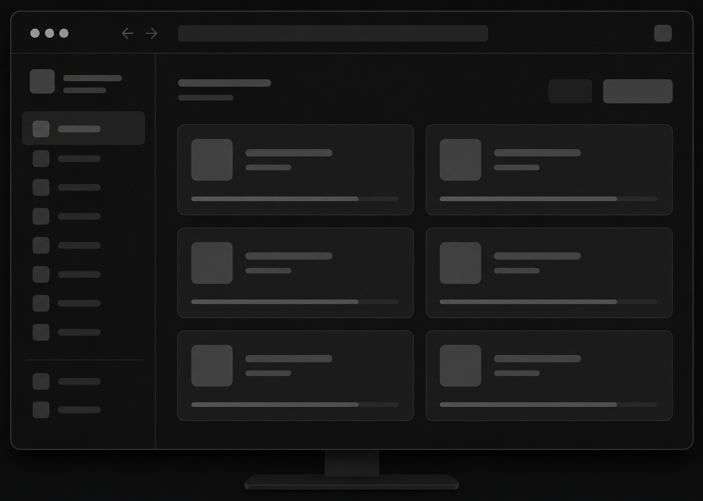

Aplikasi, platform, dan tools yang dikembangkan menggunakan Flutter, Laravel, Next.js, Docker, dan berbagai teknologi cloud & DevOps modern.
Aplikasi manajemen keuangan pribadi untuk mencatat pemasukan, pengeluaran, mengelola budget, melihat laporan keuangan, serta pengingat tagihan otomatis.
Developer platform yang menyediakan dokumentasi teknologi, showcase project, roadmap pembelajaran, serta resource untuk developer Indonesia.
Smart Point of Sales system untuk UMKM dan berbagai jenis bisnis, dilengkapi Inventory Management, Barcode Scanner, Thermal Printer, Dashboard Analytics, dan Multi Payment.
Smart Attendance System berbasis GPS dan selfie verification untuk memastikan data kehadiran lebih akurat, transparan, dan tidak dapat dititipkan.
Smart home system berbasis IoT yang menghubungkan ESP32, Firebase Realtime Database, dan aplikasi Flutter secara real-time — kontrol perangkat, skenario otomatis, CCTV live view, kunci pintu jarak jauh, dan statistik konsumsi energi.
Human Resources Information System terintegrasi untuk absensi, payroll, dan manajemen karyawan — akurat di setiap langkah untuk perusahaan yang terus bertumbuh.
Platform e-commerce SaaS multi-tenant yang memungkinkan banyak toko online berjalan dalam satu sistem — warna, logo, dan tema tampilan bisa disesuaikan penuh sesuai identitas brand tiap pelanggan.
Toolkit untuk membantu pengelolaan project Flutter, Laravel, React Native, Docker, Git, dan Deployment dalam satu dashboard yang modern, cepat, dan efisien.